Dimensional and Rotational Testing of MOM6
- Marshall Ward
- Robert Hallberg
- Alistair Adcroft
NOAA-GFDL / Princeton U.
23 Sept 2021
Global Modeling
Ocean Dynamics
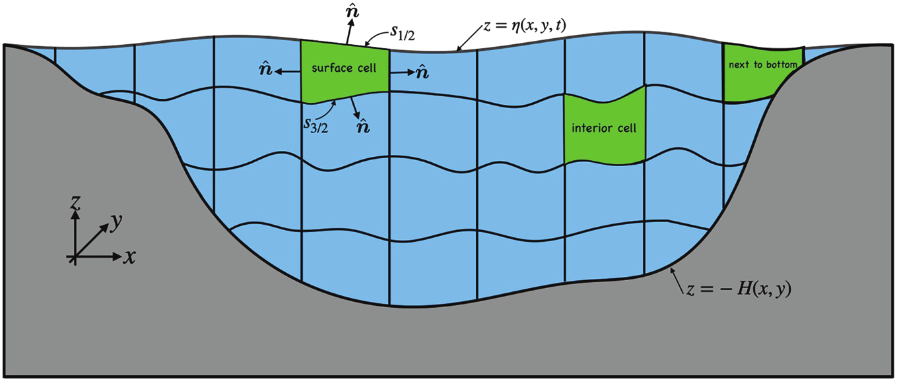
Turbulent Dynamics
Motivation
- Sustain long simulations over decades, centuries
- Accurate preservation of tracers
- Residual noise can cause chaotic growth
- Operational work needs robust testing
Reproducible floating point arithmetic is essential
Solution verification
Step Days Energy/Mass [m2 s-2] Mean Sea Level [m] ...
0 0.00 7.2161166068132286E-27 1.8190E-12 ...
12 0.50 2.7781004671136538E-04 1.1369E-12 ...
24 1.00 2.7734897826598717E-04 1.8190E-12 ...Based on global metrics (energy, mass, etc)
Diagnostic verification
u-point: ocean_model-u
min = -6.7187595818683776E-03 max = 3.3480219779204019E-02
mean = 1.1239682303793666E-04 bits = 21851
v-point: ocean_model-v
min = -8.3469699425156359E-03 max = 6.8420831486068704E-03
mean = 1.2076392816784489E-03 bits = 18606
h-point: ocean_model-h
min = 9.9999999999999915E-04 max = 5.6265092225099863E+02
mean = 3.6490088139048595E+02 bits = 18673
...Min, max, mean, bit count for every diagnostic
Verification Testing
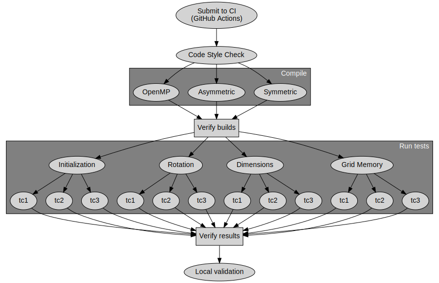
Verification Tests
| Test | Description |
|---|---|
| grid | Symmetric/Asymmetric memory grids |
| layout | 1×1 and 2×1 domain decomposition |
| restart | Restart at mid-run |
| dimension | Dimensional scaling |
| rotation | Index rotation |
| openmp | OpenMP (single-thread) |
Validation Testing
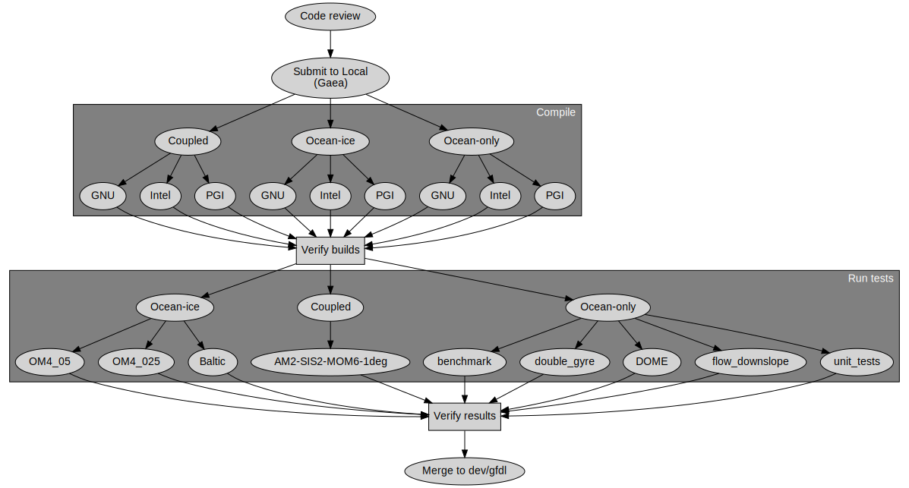
Community Validation
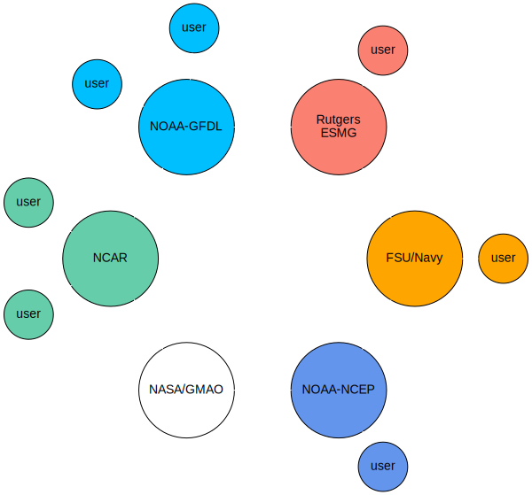
Floating Point Review
{kind=link}
\[\phi \equiv (-1)^\color{yellow}{s} \times 2^\color{aquamarine}{M} \times (1 + \color{pink}{\alpha})\]
- Smallest fractional diff: \(2^{-52} \approx 2.2 \times 10^{-16}\)
- 17 digits to uniquely specify a result
Addition Associativity
What is \(10^{-16} + 1 - 1\)?
\[\begin{aligned} (10^{-16} + 1) - 1 &\equiv 0 \\ 10^{-16} + (1 - 1) &= 10^{-16} \end{aligned}\]
Residuals below ULP (\(2\times10^{-16}\)) are lost.
Floating residual
Let \(s = 1 + 2 \times 10^{-16}\). What is \((s + 1) - 1\)?
\[\begin{aligned} s + 1 &= 2 \\ (s + 1) - 1 &= 1 \neq s \end{aligned}\]
Manipulation of \(s\) shifts ULP to \(4 \times 10^{-16}\).
Multiplication associativity
If \(a = b = 1.5\), and \(c = 1 + 2^{-52}\), then
\[\begin{aligned} (a \times b) \times c &\equiv 2.25 + 2^{-51} \\ a \times (b \times c) &\equiv 2.25 + 2^{-50} \end{aligned}\]
Explicit Ordering
Ambiguous ordering is rejected:
\[x + y + z\]
Parentheses are required:
\[\begin{aligned} (x + y) + z \\ x + (y + z) \end{aligned}\]
Select to optimize accuracy and performance.
Implementation
GCC Fortran
gfortran -fprotect-parens ... # default
gfortran -Ofast ... # Sets -fno-protect-parensIntel Fortran
ifort -assume protect-parens # Not defaultGlobal Summation
Parentheses work, but have cumulant errors:
\[\sum{\phi} = (\phi_1 + (\phi_2 + ( \phi_3 + ... )))\]
Fixed-precision is accurate and independent of order:

The sum() intrinsic is ambiguous!
Transcendentals
How is sin(x) computed? Ambiguous!
\[f(48^\circ) = 2 \Omega \sin \left( \frac{48 \pi}{180} \right)\]
glibc 2.22: 0.108381727637274115E-03 (3F1C695FE71A3FE4)
2.26: 0.108381727637274128E-03 (3F1C695FE71A3FE5)Other compilers may not even use libm!
We avoid transcendentals where possible, and manage dependencies when necessary.
Higher order powers
How to evaluate \(z^6\)?
These forms are ambiguous:
z6 = z * z * z * z * z * zCompilers may use libm pow(), also ambiguous.
We recommend:
z3 = z * z * z
z6 = z3 * z3(Why not (z * z) * z?)
Negative Zero
Although -0 == 0, bitcounts will differ.
\[\begin{aligned} \phi \times 0 = \begin{cases} 0 & \text{if $\phi \leq 0$} \\ -0 & \text{if $\phi < 0$} \end{cases} \end{aligned}\]
\(0 \Leftrightarrow -0\) transitions can detect unexpected values.
But if unresolvable, add a zero: \(-0 + 0 \Rightarrow +0\).
(e.g. min() intrinsic)
Dimensional Consistency
From the seawater equation of state:
intz(m) = &
g_Earth * dz * ((p0 + p_ave) * (I_Lzz * I_al0) - rho_ref_mks) &
- 2.0 * eps * I_Rho * (lambda * I_al0**2) * eps2 * ( &
C1_3 + eps2 * (0.2 + eps2 * (C1_7 + C1_9 * eps2)) &
)Can we ensure expressions are dimensionally correct?
Associative Scaling
Recall the floating point format
\[\phi \equiv (-1)^{\color{yellow}s} \times 2^{\color{yellow}M} \times (1 + {\color{yellow}\alpha})\]
Power-of-two multiplication is associative
\[2^\color{yellow}{N} \times \phi \times 2^\color{yellow}{-N} \equiv \phi\]
This provides a basis for bitwise dimensional scaling.
Dimension Scaling
Fields rescaled by dimensions should be invariant
\[\begin{aligned} u^{n+1} &= u^{n} + \Delta t \times \mathcal{F} \\ \color{yellow}{2^{L-T}} u^{n+1} &= \color{yellow}{2^{L-T}} u^{n} + \color{yellow}{2^T} \Delta t \times \color{yellow}{2^{L - 2T}} \mathcal{F} \end{aligned}\]
GFD Scaling
\[\begin{aligned} u_t + u u_x + v u_y &= -g h_x \\ v_t + u v_x + v v_y &= -g h_y \\ h_t + h u_x + h v_y &= 0 \\ \end{aligned}\]
Dimensions:
|
Invariants:
|
MOM6 Dimensionality
| Unit | Scaling | Name |
|---|---|---|
| s | T | Time |
| m | L | Horizontal length |
| m | H | Layer thickness |
| m | Z | Vertical length |
| kg/m3 | R | Density |
| J/kg | Q | Enthalpy |
Implementation
Input parameters
call get_param(... , "DT", ... , scale=US%s_to_T)Explicit constants
eps_vel = 1.0e-10 * US%m_s_to_L_T
ustar = 0.01 * US%m_to_Z * US%T_to_sDiagnostic registration
call register_diag_field(..., "u", ... , conversion=US%L_T_to_m_s)"US" contains user-defined power-of-two rescalings.
Rotational Consistency
PFu(I,j,k) = (((za(i,j)*dp(i,j) + intp_dza(i,j,k)) - &
(za(i+1,j)*dp(i+1,j) + intp_dza(i+1,j,k))) + &
((dp(i+1,j) - dp(i,j)) * intx_za(I,j) - &
(p(i+1,j,K) - p(i,j,K)) * intx_dza(I,j,k)) ) * &
(2.0*G%IdxCu(I,j) / ((dp(i,j) + dp(i+1,j)) + dp_neglect))PFv(i,J,k) = (((za(i,j)*dp(i,j) + intp_dza(i,j,k)) - &
(za(i,j+1)*dp(i,j+1) + intp_dza(i,j+1,k))) + &
((dp(i,j+1) - dp(i,j)) * inty_za(i,J) - &
(p(i,j+1,K) - p(i,j,K)) * inty_dza(i,J,k))) * &
(2.0*G%IdyCv(i,J) / ((dp(i,j) + dp(i,j+1)) + dp_neglect))Can we ensure consistency of expressions like this?
Horizontal Rotation
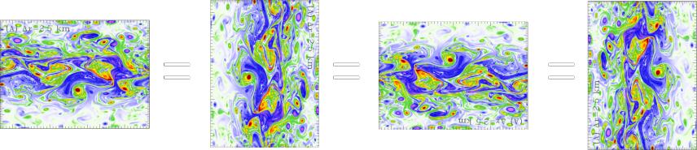
Rotate input fields, forcing, coordinates.
(x,y) and (u,v) describe first and second index
Index Rotation
| 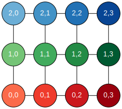 | 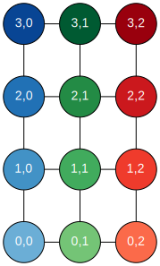 |
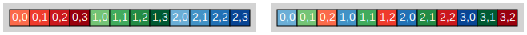
Applying the Rotation
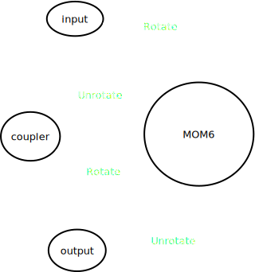 |
Read inputs on coupler grid Move to rotated MOM6 grid De-rotate fields sent back to coupler and output |
Rotational Pairs
For 90° rotations:
| Scalar |
|
| Array pair |
|
| Vector |
|
All quarter-turn rotations are supported.
Invariant stencils
\(\phi^{(c)}_{i,j} = \frac{1}{4} (\phi_A + \phi_B + \phi_C + \phi_D)\)
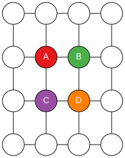
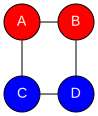 |
\(\frac{1}{4} ( (\color{LightCoral}{\phi_A} + \color{LightCoral}{\phi_B}) + (\color{LightSkyBlue}{\phi_C} + \color{LightSkyBlue}{\phi_D}) )\) \(\frac{1}{4} ( (\color{LightCoral}{\phi_A} + \color{LightSkyBlue}{\phi_D}) + (\color{LightCoral}{\phi_B} + \color{LightSkyBlue}{\phi_D}) )\) |
| 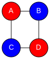 | \(\frac{1}{4} ( (\color{LightCoral}{\phi_A + \phi_D}) + (\color{LightSkyBlue}{\phi_B + \phi_C}) )\) |
Rotational ordering
subroutine advect_tracer(...)
! ...
x_first = modulo(turns, 2) == 1
if (x_first) then
call advect_x(...)
call advect_y(...)
else
call advect_y(...)
call advect_x(...)
endif
end subroutine advect_tracerWhen all else fails, reorder the algorithm.
Examples
Order of Operations
Kinetic energy calculation:
tmp1(i,j,k) = &
0.25 * KE_scale_factor * (areaTm(i,j) * h(i,j,k))) &
* (u(I-1,j,k)**2 + u(I,j,k)**2 + v(i,J-1,k)**2 + v(i,J,k)**2)tmp1(i,j,k) = &
(0.25 * KE_scale_factor * (areaTm(i,j) * h(i,j,k))) &
* ((u(I-1,j,k)**2 + u(I,j,k)**2) + (v(i,J-1,k)**2 + v(i,J,k)**2))Dimensionality
Salinity contribution to diffusivity:
Kd_lay(i,j,k-1) = Kd_lay(i,j,k-1) + 0.5**KS_extra(i,K)
Kd_lay(i,j,k) = Kd_lay(i,j,k) + 0.5**KS_extra(i,K)\(\ldots + \left(\tfrac{1}{2}\right)^{\kappa_S}\)?
Rotational Symmetry
subroutine thickness_diffuse_full
! ...
Work_u(I,j) = Work_u(I,j) + G_scale * (...)
Work_v(i,J) = Work_v(i,J) - G_scale * (...)
!...
end subroutine thickness_diffuse_fullCost of Reproducibility
- We forfeit compiler's ability to optimize expressions!
- We are responsible for parentheses placement
- Summations are expensive!
- Infrequent operation in our models
In general, we value reproducibility over speed.
Summary
- Bit reproducibility is essential, and achievable!
- Enables aggressive regression testing
- Dimensional consistency
- Rotationally symmetric solvers
- Methods for bit reproducibility
- Use parentheses for arithmetic operations
- Avoid ambiguous intrinsics:
sum(),sin(), ... - Manage transcendentals when possible
Apocrypha
Subroundoff
Thickness-weighted mean:
\[\overline{\phi} = \frac{\sum \phi_i h_i}{\sum h_i}\]
What if all \(h_i = 0\)? Use subroundoff:
\[\overline{\phi} = \frac{\sum \phi_i h_i}{\sum h_i + h_\text{sub}}\]
\(h_\text{sub}\) is small enough s.t. \(h_i + h_{sub} = h_i\).